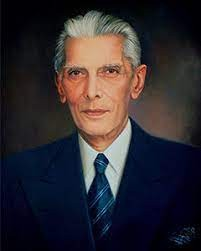

There are two powers in the world; One is the word and the other is the pen. There is a great Competition and rivalry between the two. There is a third power stronger than both, that of Women.
Biography
Mohammed Ali Jinnah was born on 25 December 1876 in Karachi, now in Pakistan, but then part of British-controlled India. His father was a prosperous Muslim merchant. Jinnah studied at Bombay University and at Lincoln's Inn in London. He then ran a successful legal practice in Bombay. He was already a member of the Indian National Congress, which was working for autonomy from British rule, when he joined the Muslim League in 1913. The league had formed a few years earlier to represent the interests of Indian Muslims in a predominantly Hindu country, and by 1916 he was elected its president. In 1920, the Indian National Congress launched a movement of non-cooperation to boycott all aspects of British rule. Jinnah opposed this policy and resigned from the congress. There were by now profound differences between the congress and the Muslim League. After provincial elections in 1937, the congress refused to form coalition administrations with the Muslim League in mixed areas. Relations between Hindus and Muslims began to deteriorate. In 1940, at a Muslim League session in Lahore, the first official demand was made for the partition of India and the creation of a Muslim state of Pakistan. Jinnah had always believed that Hindu-Muslim unity was possible, but reluctantly came to the view that partition was necessary to safeguard the rights of Indian Muslims. His insistence on this issue through negotiations with the British government resulted in the partition of India and the formation of the state of Pakistan on 14 August 1947. This occurred against a backdrop of widespread violence between Muslims, Hindus and Sikhs, and a vast movement of populations between the new states of Pakistan and India in which hundreds of thousands died. Jinnah became the first governor general of Pakistan, but died of tuberculosis on 11 September 1948.